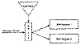

| Previous | Table of Contents | Next |
Bidirectional MAC
This MAC produces a hash value twice the length of the block algorithm [978]. First, compute the CBC-MAC of the message. Then, compute the CBC-MAC of the message with the blocks in reverse order. The bidirectional MAC value is simply the concatenation of the two. Unfortunately, this construction is insecure [1097].
Jueneman’s Methods
This MAC is also called a quadratic congruential manipulation detection code (QCMDC) [792, 789]. First, divide the message into m- bit blocks. Then:
Jueneman suggests n = 16 and p = 231 - 1. In [792] he also suggests that an additional key be used as H1, with the actual message starting at H2.
Because of a variety of birthday-type attacks discovered in conjunction with Don Coppersmith, Jueneman suggested computing the QCMDC four times, using the result of one iteration as the IV for the next iteration, and then concatenating the results to obtain a 128-bit hash value [793]. This was further strengthened by doing the four iterations in parallel and cross-linking them [790, 791]. This scheme was broken by Coppersmith [376].
Another variant [432, 434] replaced the addition operation with an XOR and used message blocks significantly smaller than p. H0 was also set, making it a keyless one-way hash function. After this scheme was attacked [612], it was strengthened as part of the European Open Shop Information-TeleTrust project [1221], quoted in CCITT X.509 [304], and adopted in ISO 10118 [764, 765]. Unfortunately, Coppersmith has broken this scheme as well [376]. There has been some research using exponents other than 2 [603], but none of it has been promising.
RIPE-MAC
RIPE-MAC was invented by Bart Preneel [1262] and adopted by the RIPE project [1305] (see Section 18.8). It is based on ISO 9797 [763], and uses DES as a block encryption function. RIPE-MAC has two flavors: one using normal DES, called RIPE-MAC1, and another using triple-DES for even greater security, called RIPE-MAC3. RIPE-MAC1 uses one DES encryption per 64-bit message block; RIPE-MAC3 uses three.
The algorithm consists of three parts. First, the message is expanded to a length that is a multiple of 64 bits. Next, the expanded message is divided up into 64-bit blocks. A keyed compression function is used to hash these blocks, under the control of a secret key, into a single block of 64 bits. This is the step that uses either DES or triple-DES. Finally, the output of this compression is subjected to another DES-based encryption with a different key, derived from the key used in the compression. See [1305] for details.
IBC-Hash
IBC-Hash is another MAC adopted by the RIPE project [1305] (see Section 18.8). It is interesting because it is provably secure; the chance of successful attack can be quantified. Unfortunately, every message must be hashed with a different key. The chosen level of security puts constraints on the maximum message size that can be hashed—something no other function in this chapter does. Given these considerations, the RIPE report recommends that IBC-Hash be used only for long, infrequently sent messages.
The heart of the function is
The secret key is the pair p and v, where p is an N- bit prime and v is a random number less than 2n. The Mi values are derived by a carefully specified padding procedure. The probabilities of breaking both the one-wayness and the collision-resistance can be quantified, and users can choose their security level by changing the parameters.
One-Way Hash Function MAC
A one-way hash function can also be used as a MAC [1537]. Assume Alice and Bob share a key K, and Alice wants to send Bob a MAC for message M. Alice concatenates K and M, and computes the one-way hash of the concatenation: H (K,M ). This hash is the MAC. Since Bob knows K, he can reproduce Alice’s result. Mallory, who does not know K, can’t.
This method works with MD-strengthening techniques, but has serious problems. Mallory can always add new blocks to the end of the message and compute a valid MAC. This attack can be thwarted if you put the message length at the beginning, but Preneel is suspicious of this scheme [1265]. It is better to put the key at the end of the message, H (M,K ), but this has some problems as well [1265]. If H is one-way but not collision-free, Mallory can forge messages. Still better is H (K,M,K ), or H (K1,M,K2 ), where K1 and K2 are different [1537]. Preneel is still suspicious [1265].
The following constructions seem secure:

Figure 18.15 Stream cipher MAC.
The best approach is to concatenate at least 64 bits of the key with each message block. This makes the one-way hash function less efficient, because the message blocks are smaller, but it is much more secure [1265].
Alternatively, use a one-way hash function and a symmetric algorithm. Hash the file, then encrypt the hash. This is more secure than first encrypting the file and then hashing the encrypted file, but it is vulnerable to the same attack as the H (M,K ) approach [1265].
Stream Cipher MAC
This MAC scheme uses stream ciphers (see Figure 18.15) [932]. A cryptographically secure pseudo-random-bit generator demultiplexes the message stream into two substreams. If the output bit of the bit generator ki, is 1, then the current message bit mi, is routed to the first substream; if the ki is 0, the mi is routed to the second substream. The substreams are each fed into a different LFSR (see Section 16.2). The output of the MAC is simply the final states of the shift registers.
Unfortunately, this method is not secure against small changes in the message [1523]. For example, if you alter the last bit of the message, then only 2 bits in the corresponding MAC value need to be altered to create a fake MAC; this can be done with reasonable probability. The author presents a more secure, and more complicated, alternative.
| Previous | Table of Contents | Next |
){kind=link}
){kind=link}